Render + Docker で Spring Boot アプリをデプロイする手順ガイド
Renderでビルド・公開するために必要なファイルを作成します。Renderは言語としてJavaを直接サポートしていないため、Dockerという仮想コンテナ技術を利用します。ビルドはRender側でDockerfileを読み取って行われるため、ローカルにDockerをインストールしていなくても問題ありません。
アプリケーションの実行環境をまるごとパッケージングする技術です。「どのOSでも同じように動く」状態を実現できます。詳しくは Docker構築入門 を参照してください。
Spring Boot（Maven）プロジェクトを Render（Docker デプロイ）で確実に動作させる前提で、必要なファイル作成・修正・検証まで実施してください。 【目的】 - Render でビルド/起動エラーなくデプロイできる状態にする - 過去に発生した以下を再発させない - mvnw 実行権限エラー（Permission denied） - Java ファイル先頭の BOM によるコンパイルエラー（illegal character: '\ufeff'） - ルート URL `/` で 404 になる問題（必要なら `/todo` へ誘導） 【必須対応】 1. ルート直下に Dockerfile を作成/更新 - Maven Wrapper を使ってビルド - Linux 上で `mvnw` が必ず実行できるように `chmod +x ./mvnw` を入れる - Render の待受ポート 10000 で起動する（`-Dserver.port=10000`） - マルチステージビルドにする（build + runtime） 2. ルート直下に .dockerignore を作成/更新 - 必須: .git / .idea / .vscode / target / build / out 3. 文字コードチェック - `src/main/java/**/*.java` を走査し、UTF-8 BOM があれば除去 4. ルーティング確認 - `/` アクセス時に 404 になるなら、`/todo` へリダイレクトする最小修正を追加 5. 検証 - `./mvnw test` を実行して成功を確認 - 可能なら `docker build` も実行し、Docker ビルド成功を確認 【出力してほしい内容】 - 変更したファイル一覧 - Dockerfile と .dockerignore の最終内容 - BOM 除去を行ったファイル一覧（なければ「なし」） - テスト結果（成功/失敗） - Render 側で確認すべきポイント
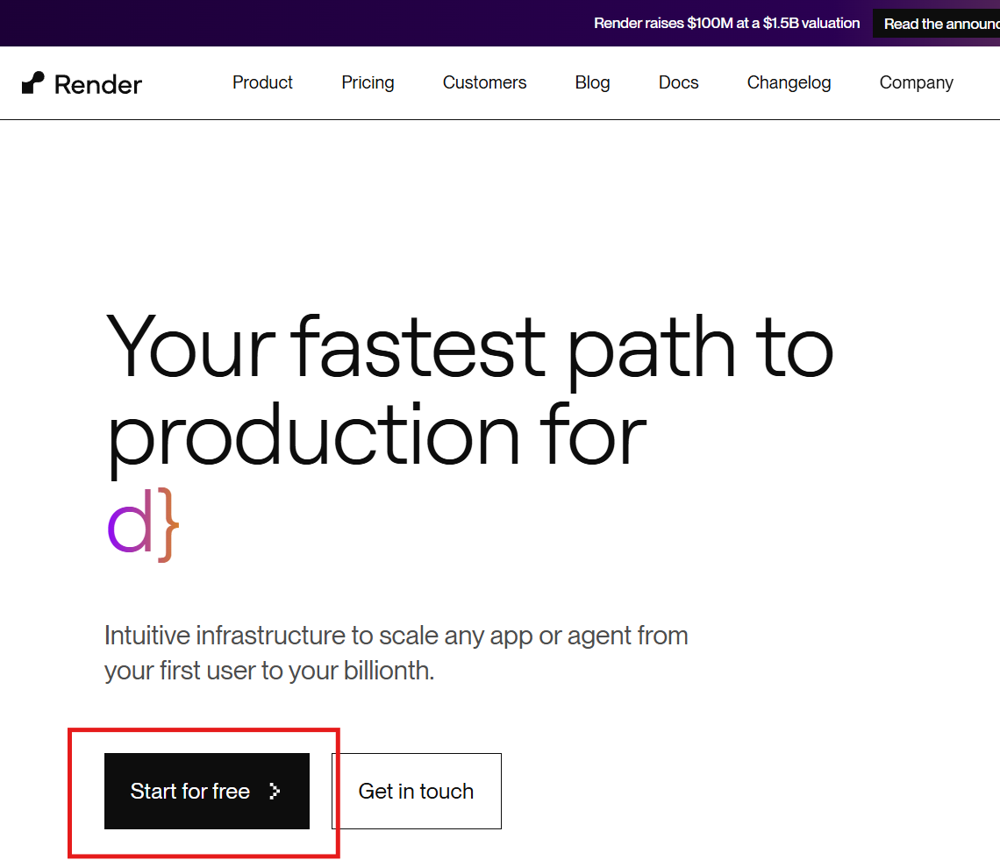
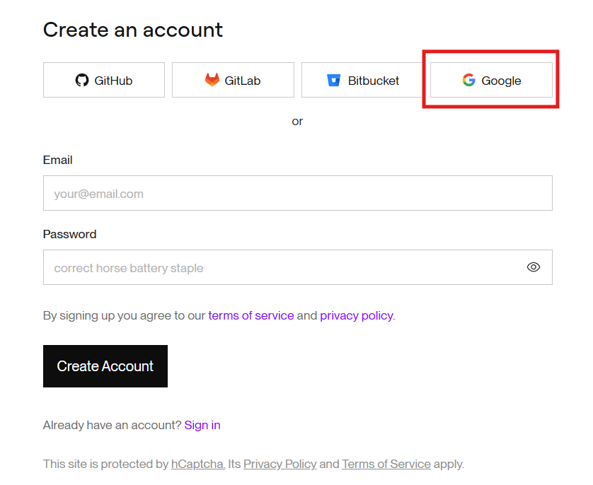
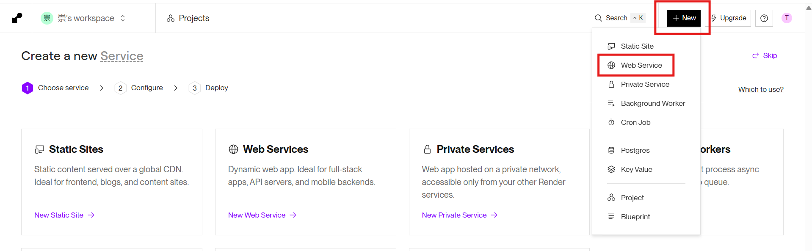
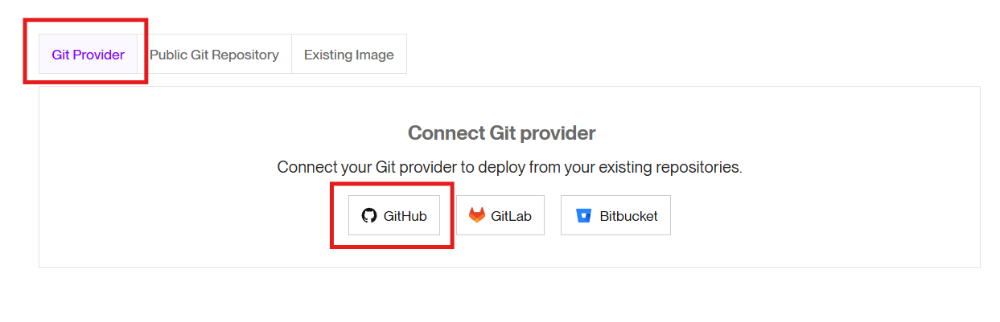
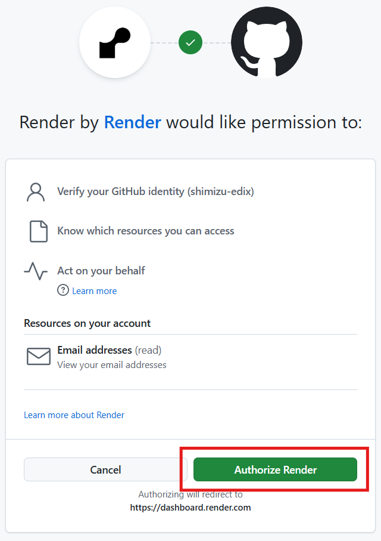
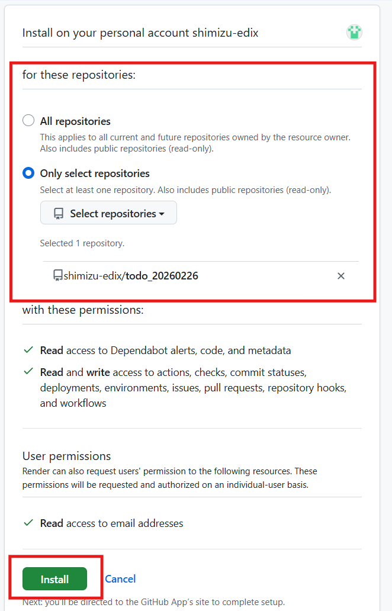
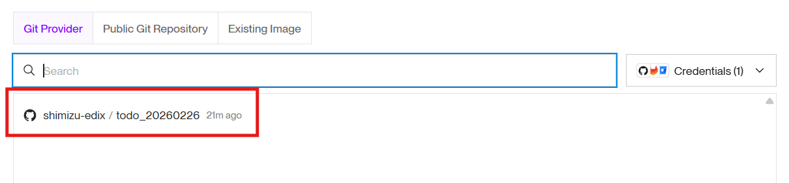
まだデプロイ（公開）はされていません。Render側に、デプロイ対象となるリポジトリを登録しただけの状態です。
| 項目 | 設定値 | 備考 |
|---|---|---|
| Name | 任意 | デフォルトはリポジトリ名 |
| Language | Docker | JavaではなくDockerを選択 |
| Branch | main | デフォルトブランチ |
| Region | Oregon (US West) | |
| Root Directory | （空欄） | 入力しない |
| Instance Type | Free | デフォルトはStarterなので注意 |
| Environment Variables | （空欄） | 必要に応じてAIに確認 |
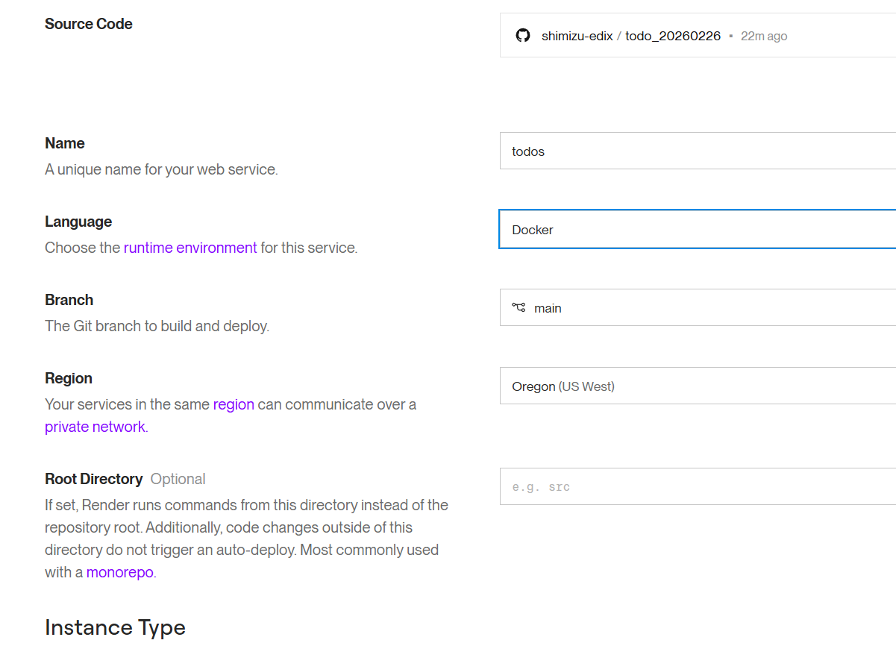
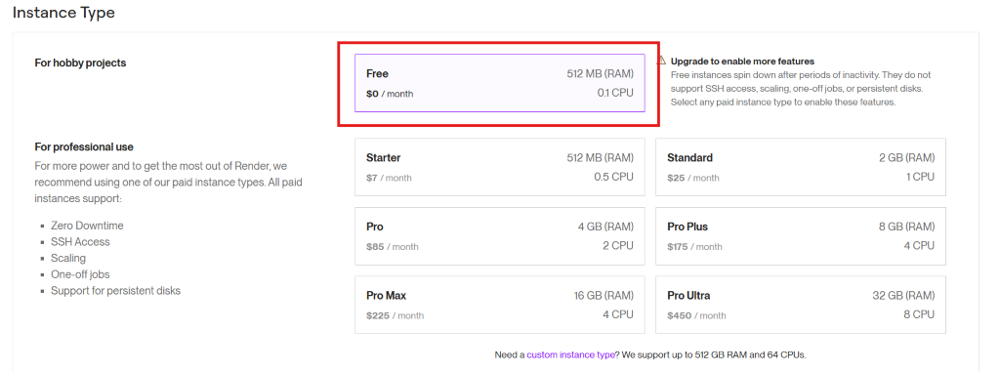
デフォルトでは Starter（有料） が選択されています。学習用途では必ず Free に変更してください。
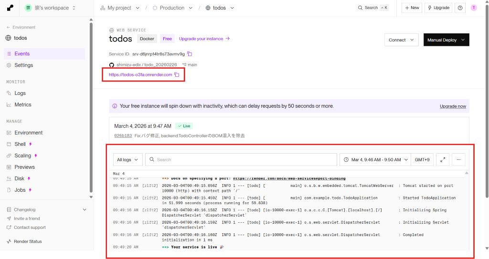
画面中央付近に赤い×アイコンが表示されます。下部のログをメモ帳等に保存し、AIにファイル添付して修正依頼 → 修正後コミット・プッシュで自動再デプロイされます。
例）https://todos-o31a.onrender.com → https://todos-o31a.onrender.com/todo
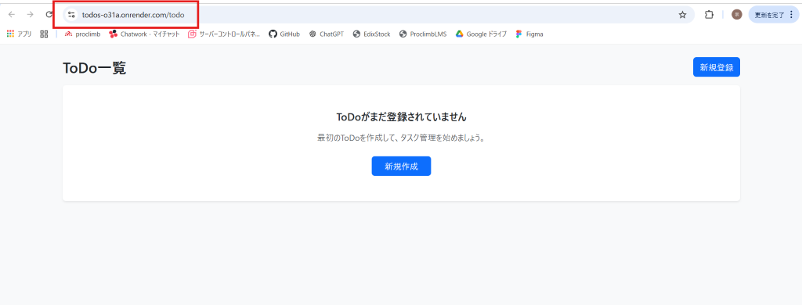
15分間アクセスがないとServiceが停止します。次回アクセス時にService起動で1分程度かかります。
FreeプランではDBが停止するたびにリセットされます。永続的にデータを保存するには有料プランが必要です。
月間Service起動時間が750時間です。1Serviceなら問題ありませんが、複数Serviceでは不足する場合があります。
Freeプランではメモリが小さいため、重いサービスでは動作が鈍くなる可能性があります。
Node.js等を導入している場合は動作の保証ができません。AIに確認しながら適切なデプロイ環境に整えましょう。